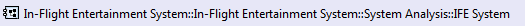

Status line available on the bottom left of the Project Explorer is displaying the qualified name of any model elements and representations.

On representations, it also displays the status of the representation
| (Invalid) | An invalid representation
(see section: User Interface / Capella Project Explorer / Appearance) |
| (Not Loaded) | Load status
On a Team context, representations are loaded on demand, implying that the session opening does not load representations. They will be loaded as soon as Capella needs it to perform the functionality |
| (Synchronized) / (Unsynchronized) | Synchronization status
(see section: Diagram Management / Advanced Management of Diagrams / Synchronized and Unsynchronized Diagrams) |